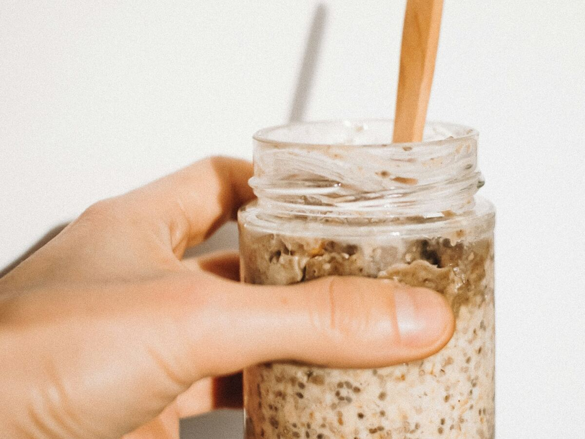

High protein suhoor for Ramadan 2027
Three suhoor recipes with at least 40g of protein each, all made in batches of four so suhoor is a reheat, not a cook. Plus reheat times and a night before routine.

The full pack includes the 30 day Ramadan 2027 plan. Suhoor, iftar and a late meal for every day, 7 cook days and the shopping lists. Try 5 recipes free, or get the pack for £12.
Why prep suhoor the night before
Suhoor is the meal most people skip or rush, because it lands at the worst time of day for cooking. If the food is already made, you only have to reheat it, sit down and eat. Each of the three recipes below makes four servings in one go, so one batch covers four mornings of the plan.
Suhoor ends at the start of Fajr, and the time moves by a minute or two every day. Check your local mosque timetable and set your alarm from that, not from an app default.
The three suhoor recipes at a glance
| Recipe | Protein | Kcal | Days |
|---|---|---|---|
| Cardamom Date Protein Oats | 42g | 462 | 14 |
| Masala Omelette Wraps | 40g | 524 | 8 |
| Chilli Cheese Egg Muffins | 42g | 344 | 8 |
Per serving. Underlined recipes have a page on this site. Days is how many of the 30 days use that suhoor in the Ramadan 2027 plan.
Cardamom Date Protein Oats
Overnight oats with cardamom, dates, cinnamon and berries, set with 0% Greek yoghurt and vanilla whey. Make four jars in ten minutes, eat them cold or warm them for 90 seconds. Use halal certified whey. Covers 14 of the 30 days in the plan.
Storage: Fridge 4 days in sealed jars. Do not freeze, as the yoghurt splits and the oats turn watery when defrosted.
Masala Omelette Wraps
A desi style omelette with onion, tomato, green chilli and coriander, cooked onto a wholemeal wrap with a little reduced fat cheddar. Make four, wrap them in foil and reheat in a dry pan. Covers 8 of the 30 days in the plan.
Storage: Fridge 3 days, wrapped in foil. Reheat in a dry pan or the microwave. Freezer 1 month.
The full method is in the pack. Ingredients: 10 large eggs, 400ml liquid egg whites, 1 small red onion, finely chopped, 2 tomatoes, chopped, 2 green chillies, chopped, handful of coriander, 2 tsp oil, 4 wholemeal wraps, 60g reduced fat cheddar.
Chilli Cheese Egg Muffins
Baked egg muffins with chicken, peppers, spinach and cheese. Twelve muffins make four servings of three. Add a slice of wholemeal toast if you want a bigger suhoor. Covers 8 of the 30 days in the plan.
Storage: Fridge 4 days, freezer 2 months. Microwave for 45 to 60 seconds.
Reheat times
Reheat until steaming hot all the way through, and reheat once only.
The night before
A calm 45 minute suhoor
Small things that make suhoor easier
- Keep suhoor boxes on one fridge shelf, labelled by day number.
- Pack tomorrow's iftar box on the same trip to the fridge, so it is ready when you get in.
- Go easy on the chilli in the omelette wraps and muffins if you prefer a milder suhoor.
- Short on protein for the day? A 200g pot of 0% Greek yoghurt on the side adds about 20g.
The suhoor recipes sit inside a full 30 day plan, which also covers iftar and a late meal. See how the iftar meal prep works, or read how to keep your muscle in Ramadan.